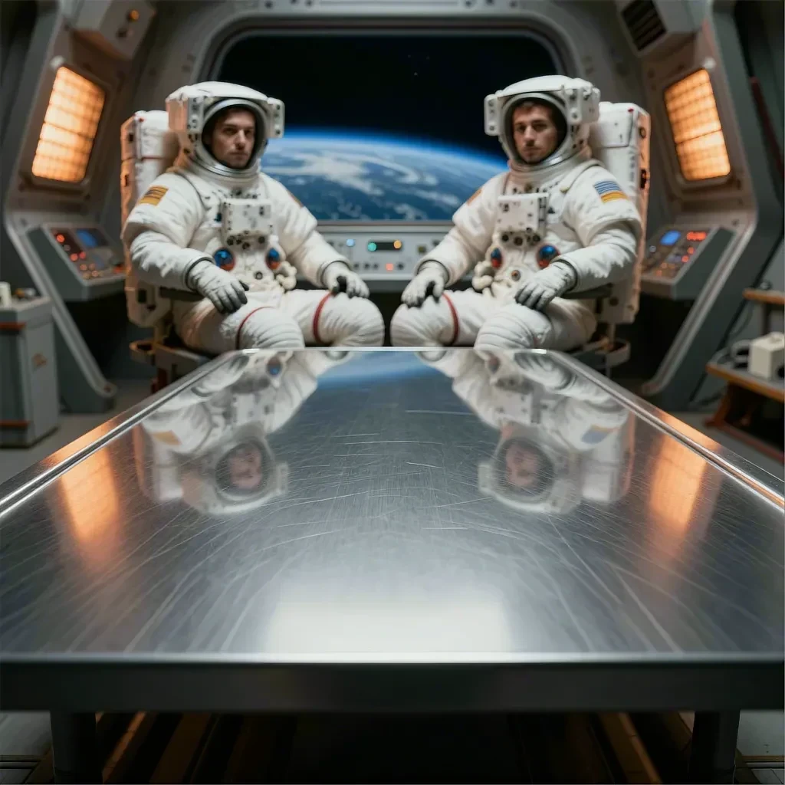
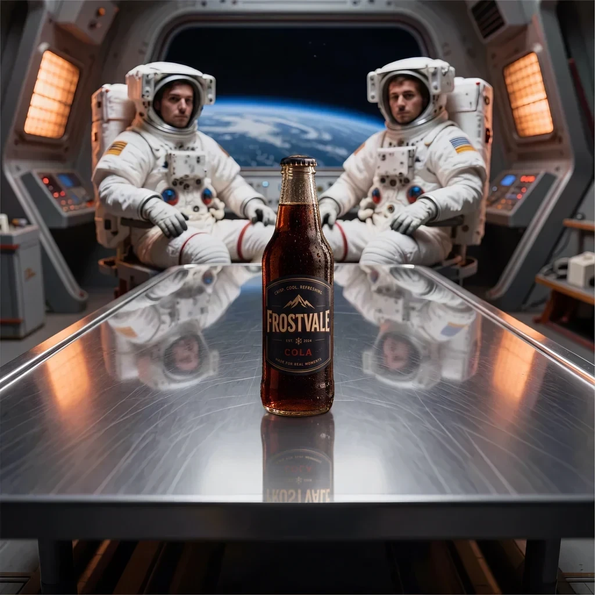
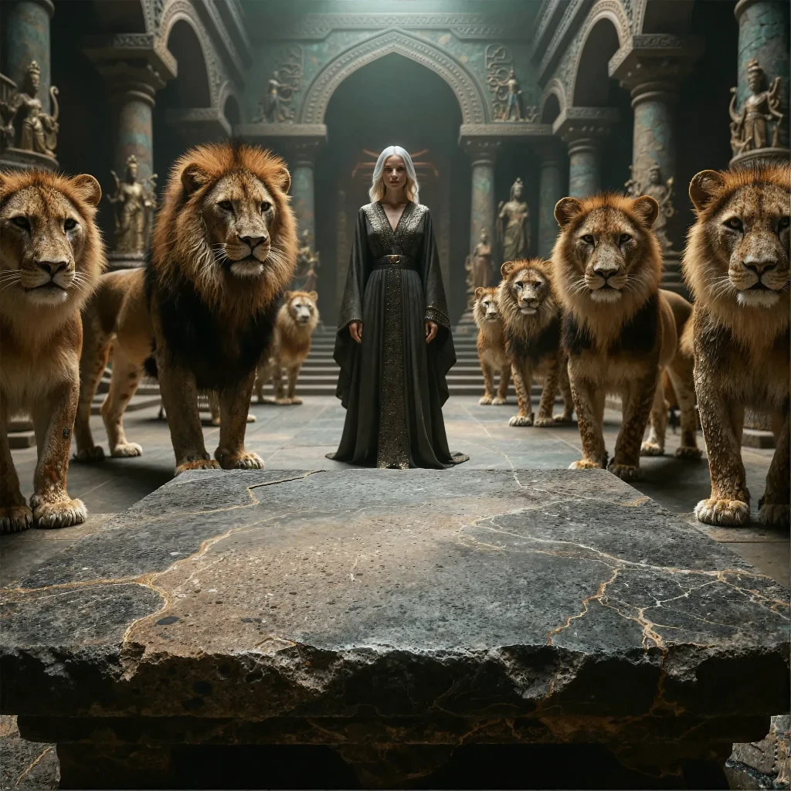
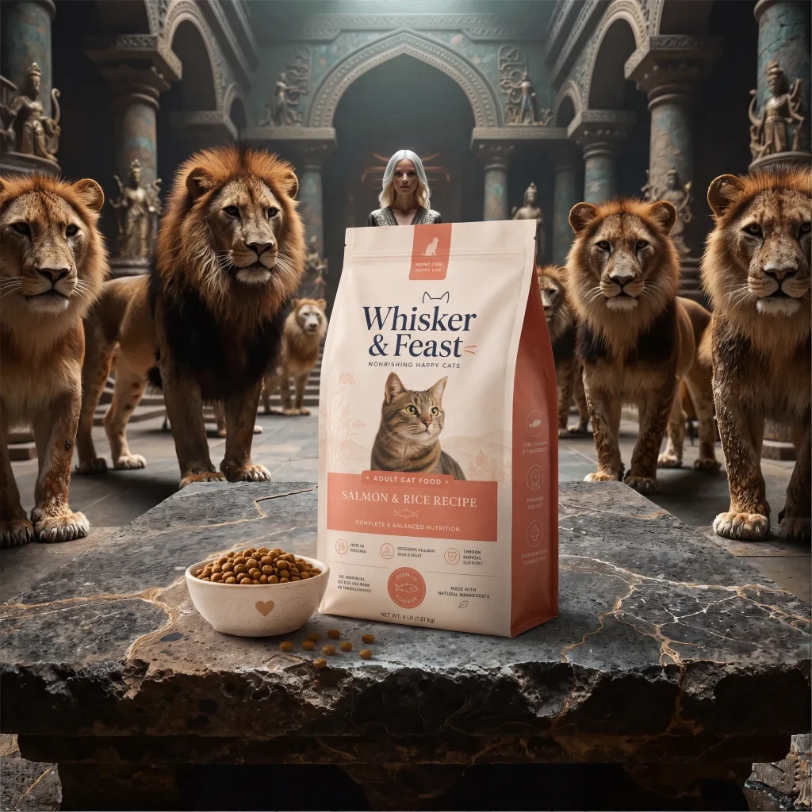
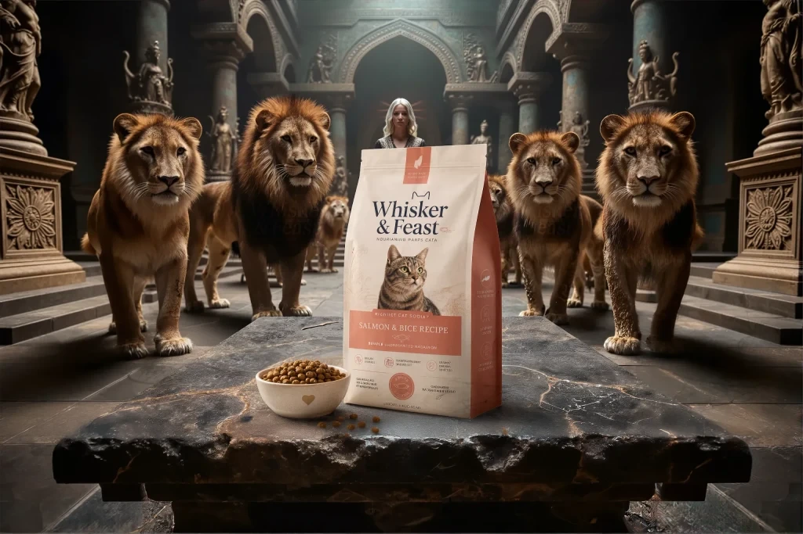
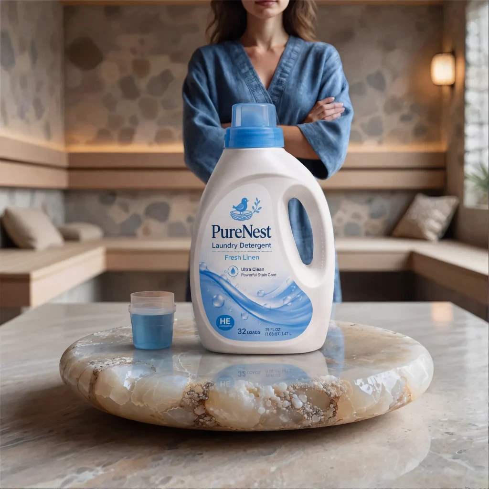

01 Prework
Public model APIs came before the product.
Before building ProductBackground, I published and iterated on image-generation, image-to-image, enhancement, and upscaling models through Replicate. That work made model packaging, input and output contracts, runtime constraints, and remote inference tangible—and became technical prework for the more controlled end-to-end product.
02 Problem
From background generator to product-imaging workflow.
The original product generated empty lifestyle backplates for later compositing. The current workflow also starts from a product reference: Auto Studio plans a suitable environment, generates the background, and places the product. Users can still build or select a scene first when they want direct control over the composition.
The common task is to connect product identity, scene direction, and delivery format. Planning and composition remain separate stages inside the system, while the interface offers either an automatic sequence or a manual path. The final image still needs review against the supplied product.
03 System
A product reference becomes a directed scene.
Auto Studio combines product analysis, scene planning, RunPod background generation, and placement through the configured OpenAI or Google Gemini image provider. Users choose a neutral, creative, or specific direction and a square, landscape, or portrait format. Creative category presets cover beauty, fashion, food, tech, and home; scenes can use a display surface or natural ground.
A paid written scene plan can be reviewed and reused for generation with matching inputs, without paying for planning twice. It is a proposal, not a preview image. Direct generation remains available for users ready to create the composition.
- 01One durable generation pipelineWeb, API, MCP, and Shopify requests reuse the application's queue, generation services, usage accounting, and storage.
- 02Costs and capability before submissionConfigured MP quotes and source-specific enhancement options make the next operation reviewable before a paid request.
- 03Private assets, reviewed resultsOwned references and outputs use private Supabase storage and authenticated delivery. Users inspect product fidelity before enhancement or export.
04 Manual studio & Enhance
Direct the individual steps when the brief needs it.
Create a standalone background, then place the product in manual Product Studio with one required reference and an optional second view of the same product. Phone capture, real-world dimensions, and placement notes guide scale, perspective, lighting, contact shadows, and reflections. Composition uses the configured OpenAI or Google Gemini provider.
Enhance works on completed library images, including multiple selections, with horizontal or vertical outpainting and supported upscale paths. Creative drafts add campaign concepts, editable copy, and text-overlay images. Available operations depend on the source and configuration; review labels, logos, geometry, colours, and invented details before delivery.


05 Integrations
The same product engine, beyond the web interface.
I built REST API access, an OAuth-linked MCP integration, and an embedded Shopify Catalog Studio around the existing generation services. Shopify adds catalog references, multi-product orders, cost review, result comparison, and explicitly approved exports. API and agent workflows can request scene plans and product jobs through the same durable queue.
Optional Google Drive and Dropbox connections supply assets; Canva handoff and PNG/ZIP export carry results into further editing. These adapters are implemented in the application, with availability controlled by rollout gates, account access, and provider configuration.
06 Role
End-to-end ownership across product, interface, code, and AI workflows.
I shaped the product logic, designed the studio interfaces, built the full-stack application and ComfyUI pipelines, and connected image providers, private storage, compute, billing, and external adapters. The work now spans creative direction and the operational details of a service: durable jobs, reusable paid plans, usage settlement, and delivery across several entry points.
07 Evidence
Empty scene. Placed product. Wider composition.
These published examples show the stages behind the workflow: an empty scene, a referenced product placed into it, and an expanded delivery format. Discover adds original proportions, resolution and workflow tags, a hero-image filter, and reusable prompts where published.
A stone foreground in a hall of lions, the placed cat-food composition, and its wider outpaint illustrate placement and enhancement. The square and landscape versions are shown in their original proportions.




The Hero Image Factor guide adds seven manual review checks: focus, fit, integrity, space, contrast, responsiveness, and speed. It connects image creation with the practical demands of a website hero or campaign layout.
Explore Discover · Live site and application source reviewed October 1, 2026.